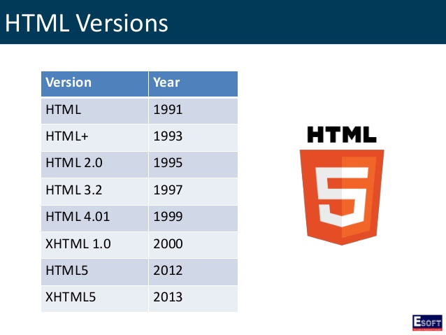

Le HTML(Hypertext Markup Language) est un langage de "balisage". Il sert à représenter les pages Web (WWW : World Wide Web)..
Le HTML donne la structure d'une page Web.
Il est généralement associé avec :
Les langages HTML et CSS font partie des langages de description (contrairement à JavaScript qui est un langage de programmation).
Le code d'une page HTML est stocké dans un fichier texte avec l'extension .htm ou .html
Un éditeur de texte est donc nécessaire pour écrire le code source par example notepad++ ou bien atom.
Pour interpréter le code HTML, il faut simplement un navigateur Web (c'est-à-dire un client HTTP HyperText Transfer Protocol). Par example Chrome.
<!DOCTYPE html> <!--indique le type de document-->
<html> <!--début du code html-->
<head> <!--début de l'en-tête-->
<meta charset="UTF-8"/> <!--encodage des caractères-->
<title>Document sans nom</title> <!--titre-->
</head> <!--fin de l'en-tête-->
<body> <!--corps de la page-->
</body>
</html> <!--fin du code html-->
Les règles de style CSS permettent de personnaliser les couleurs, de définir les polices de caractères, de positionner les éléments les uns par rapport aux autres, etc. Bref en html seulement c'est moche, mais avec le css c'est plus joli !
On peut incorporer les styles CSS directement dans les balises HTML avec l'attribut style. Cette technique est simple mais peu pratique.
Example:
<body style="background-color: green; font-family: 'TimesNewRoman';">
<h2 style="text-align: center; color:brown;">Les feuilles de style CSS</h2>
<p style="margin-left: 100px;">Bonjour à tous ! Ceci est un exemple d'utilisation des feuilles de style<span style="color: blue; font-weight: bold;">CSS
</span>(Cascading Style Sheets).</p> </body>C'est la technique la plus efficace, celle que l'on rencontre dans la plupart des sites Web.
L'élément <link> fait le lien avec la feuille de style CSS (ici le fichier externe style.css)
L'attribut class de l'élément <span> permet d'utiliser des règles CSS personnalisées. La feuille de style se trouve dans le fichier style.css
La syntaxe du langage CSS est très simple à comprendre :
<!--selecteur de type--> body { background-color: green; font-family: 'TimesNewRoman'; } h2 { text-align: center; color: brown; } p { margin-left: 100px; } /*le selecteur "." ==> classe */ .important { color: blue; font-weight: bold; }C'EST FINI !!! MAINTENANT C'EST À VOUS DE JOUER !!